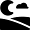
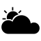
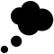
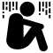
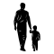
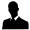
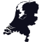
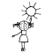

Rozdział 2 TOP 2000
2.1 Leef, André Hazes jr.

Op een vrijdag in de kroeg ergens in Amsterdam
Zat aan de bar met een glas een oude wijze man
Hij zei dat die nog maar een paar dagen had
Dus pak het leven, pak alles en ga er mee op pad
W piątek w pubie w Amsterdamie siedział
Stary mądry człowiek ze szklanką przy barze
Powiedział, że zostało mu jeszcze tylko kilka dni
Więc chwytaj życie, weź wszystko i ruszaj ze mną
En hij zei: ’’Leef, alsof het je laatste dag is
Leef, alsof de morgen niet bestaat
Leef, alsof het nooit echt af is
En leef, pak alles wat je kan’’
I rzekł: ’’Żyj, jakby to był twój ostatni dzień
Żyj, jakby nie miało być jutra
Żyj, jakby to nie był koniec do końca
I żyj, łap wszystko’’
En ga, a, a, a
A, a, a, a
A, a, a, a
Pak alles wat je kan
I leć, a, a, a
A, a, a, a
A, a, a, a
Łap wszystko, co możesz
En ga, a, a, a
A, a, a, a
Ga
Pak alles wat je kan
I leć, a, a, a
A, a, a, a
Leć
Łap wszystko, co możesz
Hij vertelde dat ’ie zich had gewerkt in het zweet
Geld verdiend als water maar nooit echt had geleefd
Z’n vrouw was bij hem weg, voor een ander ingeruild
Af en toe gelachen maar veel te veel gehuild
Opowiedział, jak się w życiu napocił przy robocie
Pieniądze spływały lekko ale nigdy nie żył naprawdę
Żona go opuściła zamieniła sobie na innego
Zbyt mało śmiał się a zbyt dużo się napłakał
- Hij is zo vlug als water. On chwyta w biegu.
- Ik wilde net op pad gaan. Właśnie miałem wyruszyć w drogę.
- Gele gans zelf. Zażółć gęślą jaźń.
2.2 Een beetje verliefd, André Hazes

In een discotheek, zat ik van de week
En ik voelde mij daar zo alleen
’t Was er warm en druk, ik zat naast een lege kruk
Ik verlangde zo naar jou hier aan m’n zij
W jakiejś dyskotece byłem na tygodniu
I czułem się tam bardzo samotny
Było tam gorąco i tłoczno, siedziałem przy pustym stołku
Tak pragnąłem cię tutaj przy moim boku
Ja, ik denk nog steeds hoe het was geweest
Toen je naast me zat hier aan de bar
Ik vroeg: ‘’Drink je mee?’’, dat vond jij oké
Toen je proostend naar me keek werd ik zo week
Tak, wciąż się zastanawiam, jak to było
Gdy się do mnie przysiadłaś przy barze
Spytałem: ‘’Napijesz się ze mną?’’, zgodziłaś się
Kiedy na mnie spojrzałaś przy toaście, stałem się taki miękki
Een beetje verliefd, ik dacht een beetje verliefd
Als ik wist wat jij toen dacht, had ik nooit op jou gewacht
Als een kind zat ik te dromen deze nacht ben jij voor mij
Maar die droom ging snel voorbij
Trochę zakochany, myślałem trochę zakochany
Gdybym wiedział, co wtedy myślisz, nigdy bym na ciebie nie czekał
Jak małe dziecko ciągle marzyłem, tej nocy jesteś dla mnie
Ale ten sen szybko minął
Jij stond op en zei: ‘’Hou m’n plaatsje vrij
Ik moet even weg maar ben zo terug’’
Ach, die kruk bleef leeg tot ik in de gaten kreeg
Dat je wegging zonder mij, ik was nu alleen
Wstałaś i powiedziałaś: ‘’Zajmij mi miejsce
Muszę na chwilę wyjść, ale zaraz wrócę’’
Ach, ten stołek stał pusty, dopóki nie zauważyłem
Że odeszłaś beze mnie, teraz byłem sam
- Weet je wat, ik ben er zat van. Wiesz co, mam tego dosyć.
- Ik verlang ernaar met je alleen te zijn. Pragnę być z tobą sam.
- Ik heb de wet aan m’n zij(-de). Prawo mam po swojej stronie.
- Dat vind ik erg leuk. To mi się bardzo podoba.
- We zitten te praten. Gadamy sobie.
- Ik krijg dit in de gaten. Zdaję sobie sprawę z tego
2.3 Nacht, Guus Meeuwis and Kraantje Pappie

Nacht (Meeuwis and Pappie 2020) [Noc] Ćwierć wieku po Het is een nacht Guus Meeuwis wykonał “Nacht” wraz z raperem Kraantje Pappie. Posłuchajcie sami.
Het is een nacht
Die je normaal alleen in films ziet
Het is een nacht
Die wordt bezongen in het mooiste lied
Het is een nacht
Waarvan ik dacht dat ik hem nooit beleven zou
Maar vannacht beleef ik hem met jou oh oh
To jest taka noc
Którą widzisz zwykle tylko w filmach
To jest taka noc
O której mówi najpiękniejsza piosenka
To jest taka noc
O której myślałem, że jej nigdy nie przeżyję
A którą dziś przeżywam z tobą Ooo
Op de grond ligt Châteauneuf-du-Pape
De radio zacht, rond middernacht
Ik hoor Suus en Freek, een blauwe dag
En ik kijk hoe je slaapt, ik hou je vast
Want ik weet dat het niet lang meer duurt voor jij gaat
Ik snap dat jij me niet te dichtbij laat
En je weer vrijmaakt en je op tijd staat
Je twijfelt aan of ik wel echt meen wat ik heb gezegd
En of ik nog steeds wel de echte ben
En of ik niet ren naar 050 en je niet meer ken als een slechte vent
Maar vannacht is dat allemaal niet de case
Voor nu is het nog nooit zo mooi geweest
Jij en ik, the road can wait
En ben ik voor eerst opeens compleet
Na ziemi leży Châteauneuf-du-Pape
Radio cicho gra, jest koło północy
Słyszę Suus i Freek, jakiś niebieski dzień
Patrzę jak śpisz, przytulam cię
Bo wiem, że to nie potrwa już długo zanim wyjdziesz
Rozumiem, że nie pozwolisz mi się zbliżyć
En je weer vrijmaakt en je op tijd staat
Wątpisz, czy naprawdę mam na myśli to, co powiedziałem
I czy nadal jestem prawdziwy
I czy nie biegnę na 50 i już cię nie znam jak jakiś zły facet
Ale dziś w nocy to w ogóle nie o to chodzi
Jeszcze nigdy nie było tak pięknie
Ty i ja, droga może poczekać
Nagle po raz pierwszy jestem spełniony
Als het komt, zou ik steeds met je zijn
En als je wennen moet, begrijp ik baby, neem je de tijd
Hier leven we voor, plus cash en baguettes
En deze nacht heeft alles wat ik zocht op deze plek
Gdyby tak się stało, zawsze byłbym z tobą
A jeśli musisz się zastanowić, rozumiem to baby, nie spiesz się
Po to żyjemy, plus kasa i bagietki
I ta noc ma wszystko, co szukałem w tym miejscu
Hey schat, ik zou m’n kleine teen geven voor nog één nacht
Het is natuurlijk geen wonder dat ik je
Donderdag al bijzonder zag in het dons gepakt heb
En onze nacht werd er één als
Die van Leo en Kate was
We on top of the world, ben volledig gebrainwashed
But I like it, yeah, jij showt wat life is
En ja, je life is er een als Kylie’s
Maar net iets ronder en iets gezonder
Dat is precies hoe mijn vibe is, yeah
Jij bent de nicest
Bel de Bel, boy, bestel champagne
Fuck the prices, je rolt met Crane
Hej kochanie, oddałbym mój mały palec u nogi za jeszcze jedną noc
Oczywiście to nic dziwnego, że ja ciebie
Donderdag al bijzonder zag in het dons gepakt heb
A nasza noc stała się taką jedną,
Jaka należała do Leo i Kate
Jesteśmy na szczycie świata, mam kompletnie wyprany mózg
Ale lubię to, tak, pokazujesz, czym jest życie
I tak, twoje życie jest takie jak życie Kylie
Ale nieco bardziej zaokrąglone i nieco zdrowsze
Dokładnie taki jest mój klimat, tak
Jesteś najmilsza
Bel de Bel, chłopie, zamówmy szampana
Pieprzyć ceny, ty kręcisz z Crane
Maar vannacht beleef ik ’m met jou, oh
Ja ik hou alleen nog maar van jou
Ja ik hou alleen nog maar van jou
Ale dziś przeżywam ją z tobą Ooo
I kocham tylko wyłącznie ciebie
I kocham tylko wyłącznie ciebie
- Châteauneuf-du-Pape fr. cenione wino
- Suus en Freek duet wykonujący Blauwe Dag 2.5
- Leo en Kate para z filmu Titanic
- Kylie amerykańska celebrytka
- Bel de Bel właść. fr. La Belle des belles
- Crane od Kraantje, wykonawcy piosenki
2.4 Het is een nacht, Guus Meeuwis

Het is een nacht (Meeuwis 1995) [To jest taka noc] powstała po romantycznym weekendzie, jaki spędził autor ze swoją dziewczyną Valérie Gregoire w Brugii.
Je vraagt of ik zin heb in een sigaret
Het is twee uur ’s nachts
We liggen op bed
In een hotel in een stad
Waar niemand ons hoort
Waar niemand ons kent
En niemand ons stoort
Op de vloer ligt een lege fles wijn
En kledingstukken die van jou of mij kunnen zijn
Een schemering de radio zacht
En deze nacht heeft alles
Wat ik van een nacht verwacht
Pytasz, czy mam ochotę na papierosa
Jest druga w nocy
Jesteśmy w łóżku
W hotelu, w mieście
Gdzie nikt nas nie słyszy
Gdzie nikt nas nie zna
I nikt nam nie przeszkadza
Na podłodze leży pusta butelka po winie
I ubrania, które mogą być twoje lub moje
Półmrok, radio cicho gra
I ta noc ma wszystko
Czego oczekuję od nocy
Het is een nacht
Die je normaal alleen in films ziet
Het is een nacht
Die wordt bezongen in het mooiste lied
Het is een nacht
Waarvan ik dacht dat ik hem nooit beleven zou
Maar vannacht beleef ik hem met jou ohoh
To jest taka noc
Którą widzisz zwykle tylko w filmach
To jest taka noc
O której mówi najpiękniejsza piosenka
To jest taka noc
O której myślałem, że jej nigdy nie przeżyję
A którą dziś przeżywam z tobą Ooo…
Ik ben nog wakker en ik staar naar het plafond
En ik denk aan de dag lang geleden begon
Het zomaar er vandoor gaan met jou
Niet wetend waar de reis eindigen zou
Nu lig ik hier in een wildvreemde stad
En heb net de nacht van mijn leven gehad
Maar helaas er komt weer licht door de ramen
Hoewel voor ons de wereld
Vannacht heeft stil gestaan
Nadal nie śpię i wpatruję się w sufit
I myślę o tym dniu co zaczął się tak dawno
Tak po prostu przemija przy tobie
Nie wiedząc, gdzie zakończy się ta podróż
Teraz leżę tutaj w zupełnie obcym mieście
I właśnie miałem noc swojego życia
Ale niestety światło znów wpada przez okna
Ale co tam, świat dla nas
Zatrzymał się dziś w nocy
Maar een lied blijft slechts bij woorden
Een film is in scene gezet
Maar deze nacht met jou
Is levensecht
Ale piosenka to tylko słowa
Film jest udawany
Ale dzisiejsza noc z tobą
Jest prawdziwa
En vannacht beleef ik hem met jou ohoh
En ik hou alleen nog maar van jou ohoh
En ik hou alleen nog maar van jou
I dziś przeżywam ją z tobą Ooo…
I kocham tylko wyłącznie ciebie Ooo…
I kocham tylko wyłącznie ciebie
- Je bent trouwens eigenlijk wel geweldig. Nawiasem mówiąc, jesteś naprawdę świetny.
- Als ik niet Pools was, zou ik geen Pools kennen. Gdybym nie był Polakiem, nie znałbym polskiego.
- Heb ik daarvoor een vergunning nodig? Czy potrzebuję na to zezwolenie?
- Waar kan ik meer te weten komen over …? Gdzie mogę dowiedzieć się więcej o…?
- Wanneer … Kiedy ……..?
- Ik heb zin in een borrel. Mam ochotę na drinka.
- De lijn is bezet. Linia jest zajęta
- Als ik meer tijd had, zou ik op je wachten. Gdybym miał/a więcej czasu, poczekałbym na ciebie.
- Je moeder kan echt lekker koken. Twoja mama naprawdę potrafi dobrze gotować.
- Dat is veel, he? To dużo, prawda?
- Wanneer moet ik terugkomen? Kiedy muszę wrócić?
- Zullen wij naar de duinen gaan? Może pójdziemy na wydmy?
2.5 Blauwe dag, Suzan & Freek

Blauwe dag (Stortelder et al. 2019) [Gorszy dzień] powstała po romantycznym weekendzie, jaki spędził autor ze swoją dziewczyną Valérie Gregoire w Brugii.
Weet je nog dat jij me zei dat wij nooit zouden vluchten als een van ons
Loopt door de regen en nooit meer kijkt naar hoe het leven is in de zon
Weet je nog dat jij me zei dat jij d’r altijd bent als ik je nodig heb
Nee, ik ben het niet vergeten, nee
Wat jij me ooit hebt gezegd
Want ik zie dat jij het moeilijk hebt en niet meer lachen kan zoals je vroeger deed
En nauwelijks in de gaten hebt dat je anders loopt dan dat je deed voorheen
Weet je nog dat jij me zei dat jij d’r altijd bent als ik je nodig heb
Nee, ik ben het niet vergeten, nee
Wat jij me ooit hebt gezegd
Czy pamiętasz, jak mi powiedziałaś, że nigdy nie moglibyśmy uciec, gdyby któreś z nas
Szło w deszczu i nie widziało więcej jakie jest życie w słońcu
Pamiętasz, jak mi powiedziałeś, że tam zawsze jesteś, kiedy ja cię potrzebuję
Nie, ja tego nie zapominałam, nie
Co mi kiedyś powiedziałeś
Ponieważ widzę, że masz trudności i nie możesz się uśmiechać tak jak kiedyś
I prawie nie zauważasz, że chodzisz inaczej niż kiedyś
Czy pamiętasz, jak mi powiedziałaś, że tam zawsze jesteś, kiedy ja cię potrzebuję
Nie, ja tego nie zapomniałam, nie
Co mi kiedyś powiedziałeś
Blauwe dag, als het dondert
En valt de hemel naar beneden, ben ik hier bij jou alleen
Blauwe dag, een seconde
Laten we dansen tot de morgen en de lucht weer opengaat
Fiets met jou mee door heel de stad
Als jij dat wil, nou, dan doe ik dat
Ik ben hier op je blauwe dag
Blauwe dag, een seconde
Laten we dansen tot de morgen en de lucht weer opengaat
Gorszy dzień, kiedy grzmi
I niebo spada w dół, jestem tu sam przy tobie
Gorszy dzień, jedna sekunda
Tańczmy do rana i niebo znów się otwiera
Jechać z tobą na rowerze przez całe miasto
Jeśli tego chcesz, teraz, to ja to zrobię
Jestem tu w twój gorszy dzień
Gorszy dzień, jedna sekunda
Przetańczmy tę noc, a niebo znów się przejaśni
Weet je nog dat jij me zei dat jij d’r altijd bent wanneer ik ergens val
Nu lig ik zelf op de grond en ben ik diegene zonder licht in een donker dal
Ik ging van de top van de wereld naar de plek waar ik niemand ken
Nee, ik ben het niet vergeten, nee
Wat jij me ooit hebt gezegd
Blauwe dag, als het dondert
En valt de hemel naar beneden, ben ik hier bij jou alleen
Pamiętasz, kiedy powiedziałeś mi, że zawsze tam jesteś, kiedy gdzieś upadam
Nu lig ik zelf op de grond en ben ik diegene zonder licht in een donker dal
Ik ging van de top van de wereld naar de plek waar ik niemand ken
Nee, ik ben het niet vergeten, nee
Wat jij me ooit hebt gezegd
Blauwe dag, als het dondert
En valt de hemel naar beneden, ben ik hier bij jou alleen
Fiets met jou mee door heel de stad
Als jij dat wil, nou, dan doe ik dat
Ik ben hier op je blauwe dag
Blauwe dag, een seconde
Laten we dansen tot de morgen en de lucht weer opengaat
Fiets met jou mee door heel de stad
Als jij dat wil, nou, dan doe ik dat
Ik ben hier op je blauwe dag
Blauwe dag, een seconde
Laten we dansen tot de morgen en de lucht weer opengaat
- De lucht wordt donker. Niebo robi się ciemne.
- De lucht klaarde op. Niebo się przejaśniło.
- De hemel is blauw Niebo jest niebieskie.
- Zijn ziel was in het hemel Jego dusza była w niebie.
- Ik voel me blauw. Jestem przygnębiony.
- Weet je nog? Czy pamiętasz?
- Laten we haar alleen laten. Zostawmy ją w spokoju.
- Ik denk dat wij goede vrienden zouden kunnen zijn. Myślę, że moglibyśmy być dobrymi przyjaciółmi.
- Hij kan nauwelijks lezen. On ledwo umie czytać.
- Houd deze koffer in de gaten. Obserwuj tę walizkę.
2.6 Dromen zijn bedrog, Marco Borsato

Dromen zijn bedrog (Fabrizio et al. 1994) [Sny są ulotne] jest uważana za jeden z najbardziej udanych singli w języku niderlandzkim wszech czasów.
Steeds als ik je zie lopen dan gaat de hemel een klein beetje open
Sterren, je laat ze verbleken met je ogen die altijd stralen
Jij kan de zon laten schijnen want je loopt langs en de wolken verdwijnen en als je lacht, lacht heel de wereld mee
Zawsze, kiedy widzę jak idziesz, wtedy odrobinę otwiera się niebo
Gwiazdy, sprawiasz że one bledną, swoimi oczami, które cały czas promienieją
Możesz pozwolić słońcu świecić, bo gdy przechodzisz chmury znikają a kiedy się śmiejesz, razem śmieje się cały świat
De meeste dromen zijn bedrog maar als ik wakker word naast jou dan droom ik nog
Ik voel je adem en zie je gezicht je bent een droom die naast me ligt
Je kijkt me aan en rekt je uit een keer in de zoveel tijd komen dromen uit!
Najczęściej sny są ulotne, ale kiedy budzę się obok ciebie, wciąż marzę
Czuję twój oddech i widzę twoją twarz, jesteś snem leżącym obok mnie
Patrzysz na mnie i się wyciągasz raz na jakiś czas marzenia się spełniają!
Jij moet me een ding beloven laat me nog lang in mijn dromen geloven
Zelfs als je even niet hier bent blijf in mijn slaap dan bij me
En als de zon weer gaat schijnen laat dan dat beeld wat ik heb niet verdwijnen. Als je zou gaan, neem je mijn dromen mee
Musisz mi obiecać jedno, pozwól mi jeszcze długo wierzyć w moje marzenia
Nawet jeśli cię chwilę tutaj nie ma, zostań ze mną kiedy śpię
A kiedy znów zaświeci słońce, nie pozwól fantazji którą mam zniknąć. Gdybyś szła, zabierz ze sobą moje marzenia
- Dromen zijn bedrog. Sen mara, Bóg wiara. [prov. za Czochralski]
- Met een klein beetje geluk. Przy odrobinie szczęścia.
- De deur gaat niet open, hij klemt. Drzwi się nie otwierają, są zablokowane.
- Kom met me mee. Chodź razem ze mną.
- Als ik vragen mag. Jeśli wolno spytać.
- Ik reik mijn hand naar je uit. Wyciągam rękę do ciebie.
- De narcissen kwamen uit. Wypuściły żonkile.
- Een keer in de zoveel tijd. Raz na jakiś czas.
- Mag ik even binnenkomen? Czy mogę na chwilę wejść?
- Ik blijf in slaap vallen. Ciągle zasypiam.
- Wat heb je vannacht gedroomd? Co ci się śniło dzisiaj w nocy?
- Waar droom je over? O czym marzysz?
2.7 Ik kan het niet alleen, De Dijk

Ik kan het niet alleen (Arzbach, Broek, and Lubbe 1989) [Nie mogę tego zrobić sam] to jedna z najbardziej znanych piosenek De Dijk do dziś odtwarzana przez wiele stacji radiowych w Holandii..
Elke morgen, elke middag
Elke avond, iedere nacht
Stel dat ik er wel maar jij er niet was
Dan was morgen morgen waarschijnlijk weer zo’n dag
En ik kan ’t niet
ik kan ’t niet
ik kan er niet omheen
k-k-kan ’t niet
ik kan ’t niet alleen
Natte ramen, kale muren
Lege flessen op de gang
Lange tanden, late uren
Weinig zon en veel behang
Ik heb het geprobeerd gedaan wat ik kan
maar alles gaat verkeerd
Ik ben ook maar een man
En ik kan het niet alleen
Co rano, co południe
Co wieczór, każdej nocy
Stel dat ik er wel maar jij er niet was
Jutro prawdopodobnie znowu taki dzień
En ik kan ’t niet
ik kan ’t niet
ik kan er niet omheen
k-k-kan ’t niet
ik kan ’t niet alleen
Mokre okna, gołe ściany
Puste butelki na korytarzu
Brak apetytu Późne godziny
Niewiele słońca i wiele tapet
Próbowałem zrobić, co mogłem
ale wszystko idzie źle
Jestem tylko człowiekiem
I nie mogę tego zrobić sam
- Hij eet met lange tanden. On je niechętnie.
- Beter laat dan nooit. Lepiej późno niż wcale.
- We kunnen er niet omheen dat … Nie możemy omijać faktu, że …
2.8 O, o, Den Haag, Harry Klorkestein

O, o, Den Haag (Jekkers 1982) [Oj, oj, Haga] to piosenka uznawana za nieoficjalny hymn Hagi. Nazwa wykonawcy to anagram nazwy prawdziwego zespołu Klein Orkest.
Ik zou best nog wel een keertje net als vroeger in Moerwijk willen wonen
Na het eten een partijtje voetbal in de tuin, de ouders langs de lijn
In december met de hele buurt op jacht om kerstbomen te rausen
Op oudejaarsavond fikkie stoken, vooral die autobanden rookten fijn
Ik zou best nog wel een keertje met die ouwe naar ADO willen kijken
In het Zuiderpark, de lange zij, een warme worst, supporters om je heen
Lekker kankeren op Theo van den Burch en die lange van Vianen
Want bij elke lage bal dan dook die eikel er steevast overheen
O, o, Den Haag, mooie stad achter de duinen
De Schilderswijk, de Lange Poten en het Plein
O, o, Den Haag, ik zou met niemand willen ruilen
Meteen gaan huilen, als ik geen Hagenees zou zijn
Ik zou best nog wel een keertje net als vroeger een nachie willen stappen
Op mijn Puch een wijffie halen en daarna dansen in de Marathon
Na afloop op het Rijswijkseplein een harinkie gaan happen
De dag erna een kater dus naar Scheveningen, lekker bakken in de zon
Ik zou best nog wel een keertje … ach, wat leg ik toch te dromen
Want Den Haag is door de jaren zo veranderd, voor mij toch veel te vlug
Dat Nieuw Babylon moest dat er trouwens eigenlijk nou wel zo nodig komen?
Zo komt die ooievaar op de Vijverberg dus never-nooit meer terug
Bardzo chciałbym raz jeszcze, tak jak kiedyś, na Moerwijku zamieszkać
Po obiedzie przyciąć w nogę w ogrodzie, rodzice wzdłuż linii
A w grudniu z cała okolica na polowanie co by kilka choinek przyciągnąć
W Sylwestra rozniecać pożary, opony dymiły się szczególnie dobrze
Bardzo chciałbym raz jeszcze ze starszym na ADO popatrzeć
W Zuiderparku, długi bok, ciepła kiełbaska, kibice wokół ciebie
Cudne wyzwiska za Theo van den Burch i tym wysokim van Vianen
Ponieważ z każdą niska piłka, ten żołądź zawsze przelatywał nad nią
O, o, Haga, piękne miasto za wydmami
Schilderswijk, Lange Poten no i Plein
O, o, Haga, nie chciałbym się z nikim zamienić
Płakałbym od razu, gdybym nie był Hażaninem
Bardzo chciałbym raz jeszcze, tak jak kiedyś wyjść w noc
Zgarnąć laskę na mojego Pucha i potem tańczyć w Marathonie
Po wszystkim na Rijswijkseplein pójść śledzika przekąsić
Następnego dnia kac, wiec na Scheveningen cudownie smażyć się w słońcu
Bardzo chciałbym raz jeszcze … ach, o czym ja śnię
Ponieważ Haga przez te lata bardzo się zmieniła, jak dla mnie to zbyt szybko
Czy ten Nieuw Babylon musiał, tak miedzy nami, się tam pojawić?
Wiec nie pojawi się już nigdy więcej bocian na Vijverbergu
- Ik heb zin in een borrel. Mam ochotę na drinka.
- Nog een keer! Jeszcze raz!
- Je bent trouwens eigenlijk wel geweldig. Nawiasem mówiąc, jesteś naprawdę świetny.
- Als ik niet Pools was, zou ik geen Pools kennen. Gdybym nie był Polakiem, nie znałbym polskiego.
- Heb ik daarvoor een vergunning nodig? Czy potrzebuję na to zezwolenie?
- Waar kan ik meer te weten komen over …? Gdzie mogę dowiedzieć się więcej o…?
- Dat is veel, he? To dużo, co?
- Wanneer moet ik terugkomen? Kiedy muszę wrócić?
- Zullen wij naar de duinen gaan? Może pójdziemy na wydmy?
- De lijn is bezet. Linia jest zajęta
- Als ik meer tijd had, zou ik op je wachten. Gdybym miał/a więcej czasu, poczekałbym na ciebie.
- Je moeder kan echt lekker koken. Twoja mama naprawdę potrafi dobrze gotować.
2.9 Avond, Boudewijn de Groot

Avond (Groot and Nijgh 1997) [Wieczór] to piosenka uznawana przez Holendrów za najlepszą niderlandzkojęzyczną piosenkę wszechczasóW.
Nu hoef je nooit je jas meer aan te trekken
En te hopen dat je licht het doet
Laat buiten de stormwind nu maar razen in het donker
Want binnen is het warm en licht en goed
Hand in hand naar buiten kijkend waar de regen valt
Ik zie het vuur van hoop en twijfel in je ogen
En ik ken je diepste angst
Już nie musisz więcej zakładać kurtki
I się martwić, czy zapalą światła
Niech na dworze w ciemności szaleje wiatr
Bo w środku jest ciepło i widno i dobrze
Patrząc na dwór, gdzie pada deszcz trzymam cię za rękę
W twoich oczach widzę ogień nadziei i zwątpień
I znam twój najgłębszy lęk
Want je kunt niets zeker weten en alles gaat voorbij
Maar ik geloof, ik geloof, ik geloof, ik geloof, ik geloof in jou en mij
Bo niczego nie możesz być pewna, a wszystko przemija
Ale wierzę, wierzę, wierzę, wierzę, wierzę w ciebie i we mnie
En als je ’s morgens opstaat ben ik bij je
En misschien heb ik al thee gezet
En als de zon schijnt buiten gaan we lopen door de duinen
En als het regent gaan we t’rug in bed
Uren langzaam wakker worden, zwevend door de tijd
Ik zie het licht door de gordijnen
En ik weet, t’verleden geeft geen zekerheid
A kiedy wstaniesz rano, to ja będę przy tobie
I może herbata już będzie zrobiona
I jeśli na dworze będzie słonecznie, to pójdziemy na wydmy
A gdyby padało, to wrócimy do łóżka
Godziny powoli się budzą unosząc się w czasie
Widzę światło przez zasłony
I wiem, że przeszłość nie daje pewności
Ik doe de lichten uit en de kamer wordt nu donker
Een straatlantaarn buiten geeft wat licht
En de dingen in de kamer worden vrienden die gaan slapen
De stoelen staan te wachten op ’t ontbijt
En morgen wordt ik wakker met de geur van brood en honing
De glans van gouden zonlicht in je haar
En de dingen in de kamer, ik zeg ze welterusten
Vanavond gaan we slapen en morgen zien we wel
Maar de dingen in de kamer zouden levenloze dingen zijn
Zonder jou
Gaszę światło i teraz w pokoju robi się ciemniej
Latarnia na ulicy daje nieco światła
A rzeczy w pokoju stają się przyjaciółmi, którzy idą spać
Krzesła oczekują na śniadanie
A jutro obudzę się z zapachem chleba i miodu
Błysk złotych promieni słońca w twoich włosach
A rzeczą w pokoju, mówię dobranoc
Dzisiaj pójdziemy spać i zobaczymy się znowu jutro
Ale rzeczy w pokoju byłyby martwe
Bez ciebie
- Doe het licht maar uit. Po prostu wyłącz światło.
- Ik wil je nooit meer zien. Nie chcę cię nigdy więcej widzieć.
- Ze liepen hand in hand. Szli trzymając się za ręce.
- Die jongen toonde geen angst. Ten chłopiec nie okazywał strachu.
- Het is te hopen dat … Należy mieć nadzieją, że …
- De vlam zweeft vaak net boven het hout. Płomień unosi się często tuż nad drewnem.
- Ga Maria wakker maken. Idź obudź Marię
- Ik sta op het punt uit te gaan. Zaraz wychodzę.
- De geur van lelies vulde de kamer. Zapach lilii wypełnił pokój.
- De glans wordt gemeten volgens ISO 2813. Połysk mierzy się zgodnie z ISO 2813.
- Ik zie je wel bij de auto. Do zobaczenia w aucie.
2.10 Papa, Stef Bos

Papa (Bos 1991) [Tato] to wyznanie skierowane do ojca Bosa u którego zdiagnozowano raka. Leczenie Taty się powiodło, zmarł przeżywszy jeszcze 23 lata.
Ik heb dezelfde ogen
En ik krijg jouw trekken om mijn mond
Vroeger was ik driftig
Vroeger was jij driftig
Maar we hebben
Onze rust gevonden
En we zitten naast elkaar
En we zeggen niet zoveel
Voor alles wat jij doet
Heb ik hetzelfde ritueel
Papa, ik lijk steeds meer op jou
Mam oczy takie same
A na mojej twarzy rzeźbią się rysy twoje
Kiedyś porywczy byłem ja
Kiedyś porywczy byłeś ty
Ale znaleźliśmy
Spokój w sobie
I siedzimy obok siebie
I mówimy niewiele
Do wszystkiego, co robisz
Rytuał mam ten sam
Tato, coraz bardziej przypominam ciebie
Ik heb dezelfde handen
En ik krijg jouw rimpels in mijn huid
Jij hebt jouw ideeën
Ik heb mijn ideeën
En we zwerven in gedachten
Maar we komen altijd thuis
De waarheid die je zocht
En die je nooit hebt gevonden
Ik zoek haar ook
En tevergeefs zolang ik leef
Want papa, ik lijk steeds meer op jou
Mam ręce takie same
A na mojej skórze robią się zmarszczki twoje
Ty pomysły masz swoje
Ja pomysły mam swoje
I wędrujemy w myślach
Ale zawsze wracamy z powrotem
Ta prawda, której szukałeś
I której nigdy nie znalazłeś
Też szukam jej ja
I na próżno, dopóki żyję
Bo tato, coraz bardziej przypominam ciebie
Vroeger kon je streng zijn
En ik heb je soms gehaat
Maar jouw woorden
Ze liggen op mijn lippen
En ik praat nu
Zoals jij vroeger praatte
Ik heb een goddeloos geloof
En ik hou van elke vrouw
En misschien ben ik geworden
Wat jij helemaal niet wou
Maar papa, ik lijk steeds meer op jou
Kiedyś surowy mogłeś być
I czasami nienawidziłem ciebie
Ale słowa twoje
One są na ustach moich
A rozmawiam teraz ja
Jak rozmawiałeś kiedyś ty
Wyznaję bezbożną wiarę
I kocham wszystkie kobiety
I stałem się może czymś
Czego wcale nie chciałeś ty
Bo tato, coraz bardziej przypominam ciebie
Jij gelooft in God
Dus jij gaat naar de hemel
En ik geloof in niks
Dus we komen elkaar na de dood
Na de dood nooit meer tegen
Maar papa, ik hou steeds meer van jou
Ty wierzysz w Boga
Więc pójdziesz do nieba
A ja nie wierzę w nic
Więc nigdy więcej po śmierci
Po śmierci się nie spotkamy
Bo tato, coraz bardziej przypominam ciebie
- Ik zie een kleine glimlach om haar mond trekken.
- Ik krijg slaap. Chce mi się spać.
- Ik krijg
- Niet alles is voor geld te koop. Nie wszystko można kupić za pieniądze.
- Ik lijk op mijn moeder. Wyglądam jak moja matka.
- Inmiddels ervaren steeds meer mensen de nadelen. Tymczasem coraz więcej osób doznaje szkód.
- Ik kom thuis tegen zes uur. Będę w domu przed szóstą.
- Hij zwerft al maanden door Europa. Od miesięcy wędruje po Europie.
- Zij liggen te praten. Oni rozmawiają leżąc.
- Dat ligt mij niet. To mi nie leży.
- Eén die weldra op aller lippen zal liggen. Ten, który wkrótce będzie na ustach wszystkich.
2.11 Hij is van mij, Kris Kross Amsterdam x Maan x Tabitha ft. Bizzey

Hij is van mij (Huisman et al. 2018) [On jest mój] to luźny cover `The Boy Is Mine’ amerykańskiego duetu Brenda i Monica. W 2019 roku osiągnął on szczyty holenderskich i flamandzkich list przebojów. to piosenka która nie weszła do listy TOP 2000, ani żaden? wykonawca, ale jest najlepiej sprz się singlem w 2019.
Voor het eerst in m’n leven
Kan ik iemand alles geven
Ik voel me veiliger bij je
Ja, hij heeft alles wat ik zoek
Ik hou ‘m extra dicht bij me
Want al die meiden die kijken
Maar hij geeft me geen twijfel
Po raz pierwszy w moim życiu
Mogę komuś wszystko dać
Przy tobie czuję się bezpieczniej
Tak, on ma wszystko, czego szukam
Trzymam go bardzo blisko przy sobie
Przez te wszystkie dziewczyny, które się patrzą
Ale on nie pozwala mi wątpić
-Wat ik met hem wil begrijp jij niet
-Verspil je tijd niet langer, alsjeblieft
-Jij bent in de war, hij hoort bij mij
-Dat is niet wat hij zei tegen mij
-Nie rozumiesz, czego od niego chcę
-Nie marnuj więcej czasu, proszę cię
-Gubisz się, on należy do mnie
-To nie jest to, co on mi powiedział
Hij is van mij
Hij zegt dat ik alles voor hem ben
Dat ik hem het allerbeste ken
Dat hij aan mij denkt op elk moment
Hij is van mij
Het maakt niet uit wat je van mij dacht
Meisje, weet je niet dat ‘ie op mij wacht?
Ik doe hem het beste elke nacht
Hij is van mij
On jest mój
On mówi, że ja wszystkim dla niego jestem
Że znam go najlepiej
Że myli o mnie w każdej chwili
On jest mój
To nie ma znaczenia, co o mnie myślisz
Dziewczyno, czy nie wiesz że on na mnie czeka?
Robię mu to najlepiej każdej nocy
On jest mój
Hij is het voor mij
Geen andere heeft het
Hoe hij mij voelt kan niemand beter
Hij neemt me voorbij, beter weten
Hij heeft m’n naakt, ik zeg het elke dag
Ik zeg het elke dag
On jest dla mnie tym
Nikt więcej nie ma tego
Jak on mnie czuje nie może nikt więcej
On bierze mnie na wylot, lepiej wiedzieć
On ma moje nagie, mówię że codziennie
Mówię że codziennie
Ey, je zeurt aan m’n hoofd, mama
Kijk me in m’n ogen aan
Als je mij niet gelooft, mama (Ey, ey, ey)
Wat betekent dit dan allemaal?
Ik vind het moeilijk om te zeggen hoe het voelt
Dat er niks anders is wat is ik mis, nee
Jou beschermen, dat is mijn doel
Courtois op die bitch, ik mis niks
Ik hou van make-up seks, maar dit gaat te ver, uh
We don’t need to go there (Ooh)
You don’t wanna go there
Hej, marudzisz mi nad głową, mama
Spójrz na mnie w moje oczy
Jeśli mi nie wierzysz, mama (Hej, hej, hej)
Co zatem znaczy to wszystko?
Jest mi trudno powiedzieć, jak się czuję
Że nic innego nie ma, co by mi brakowało, nie
Bronić cię, to jest mój cel
Courtois na tę bitch, mi nie brakuje nic
Kocham robić seks, ale to idzie za daleko, uh
Nie musimy tam iść (Ooh)
Nie chcesz tam iść
-Maan hij is van mij, oh
Niet van jou maar van mij, oh
-Tabitha hij is van mij, oh
Alleen van mij
-Maan on jest mój, oh
Nie twój, ale mój, oh
-Tabitha on jest mój, ohoh
Tylko mój
- Kan ik je wat water geven? Czy mogę ci podać trochę wody?
- Ik voel me gevleid. Schlebiasz mi.
- Ik voel me moe. Czuję się zmęczony.
- Ik wil met je meegaan. Chcę iść z tobą.
- Ik ben in de war. Gubię się.
- Thibaut Nicolas Marc Courtois, belgijski bramkarz przetłumacz
2.12 Het land van…, Lange Frans & Baas B.

Het land van… (Frans, B, and Tuinfort 2005) [Kraj pochodzenia] to gniewna litania z wadami i zaletami życia w Holandii. Osobiście zabrakło mi tylko sera, małżeństw jednopłciowych, wiatraków i … Polaków.
Ah …
Kom uit het land van Pim Fortuyn en Volkert van der G.
Het land van Theo van Gogh en Mohammed B.
Kom uit het land van kroketten, frikadellen
Die je tot aan de Spaanse kust kunt bestellen
Kom uit het land waar Air Max nooit uit de mode raken
Waar ze je kraken op het moment dat je het groot gaat maken
Kom uit het land van rood-wit-blauw en de gouden leeuw
Ach …
Pochodzę z kraju Pima Fortuin i Volkerta van der G.
Z kraju Theo van Gogha i Mohammeda B.
Pochodzę z kraju krokietów, frykadeli
Które można zamówić aż do wybrzeża Hiszpanii
Pochodzą z kraju, w którym Air Max nigdy nie wychodzi z mody
W którym cię łamią w momencie, gdy zamierzasz z tego zrobić wielką sprawę
Pochodzę z kraju czerwieni, bieli i błękitu oraz złotego lwa
Plunderen de wereld, dat noemen we de Gouden Eeuw
Kom uit het land van wietplantage’s en fietsvierdaage’s
Het land waar je een junkie om een fiets kan vragen
Het land dat kampioen werd in ‘88
Het land van haring happen, dijken en grachten
Kom uit het land van, het land van Lange Franse
Dit is het land waar ik thuis kom na vakantie
Plądrowanie świata, to nazywamy Złotym Wiekiem
Pochodzę z kraju plantacji konopi i czterodniowych wycieczek rowerowych
Z kraju, w którym możesz poprosić ćpuna o rower
Z kraju, który został mistrzem w ‘88
Z kraju, przekąszania śledzia, wałów i kanałów
Pochodzę z kraju, kraju Lange Fransa
To kraj, do którego wracam do domu z wakacjach
Ah …
Kom uit het land waar ik in 1982 geboren ben
Waar ik met guldens aan de euro verloren ben
Het land dat meedoet aan de oorlog in Irak
Want ome Bush heeft Balkenende in zijn zak
Het land van gierig zijn, een rondje geven is te duur
De vette hap van de ‘’Febo’’ trek je uit de muur
Het land van rellen tussen Ajax en Feyenoord
Ach …
Pochodzę z kraju, w którym się urodziłem w 1982 roku
W którym wytraciłem swoje guldeny na euro
Z kraju, który bierze udział w wojnie w Iraku
Bo wujek Bush ma Balkenende w kieszeni
Kraj bycia skąpym, polanie jednej kolejki jest zbyt drogie
Tłuste przekąski z „Febo” wyciągasz ze ściany
Kraj zamieszek pomiędzy Ajaxem i Feyenoordem
Maar wanneer Oranje speelt iedereen erbij hoort
Het land van Johan Cruijff en Abe Lenstra
Het legioen laat de leeuw niet in zijn hemd staan
Het land waar we elke dag hopen op wat beter weer
Die Piet Paulusma vertrouw ik voor geen meter meer
Het land dat vrij is sinds ‘45
Het land waar ik blijf vind het er heerlijk
Ale kiedy grają pomarańczowi, wszyscy są razem
Z kraju Johana Cruijffa i Abe Lenstry
Ten legion nie pozwala lwu zostać w samej koszuli
Z kraju, w którym każdego dnia mamy nadzieję na lepszą pogodę
Temu Pietowi Paulusmie nie wierzę już ani krzty więcej
Z kraju, który jest wolny od ‘45
Z kraju, w którym mieszkam, uwielbiam go
Eerlijk?
Szczerze?
Ah …
Kom uit het land waar je door heen rijdt in 3 uurtjes
Met een ander dialect elke 10 minuutjes
Kom uit het land waar op papier een plek voor iedereen is
En XTC, export nummer 1 is
Kom uit het land waar André Hazes over 100 jaar in elk café nog steeds de baas is
Kom uit het land waar Peter, Gert-Jan, Raymond en Junte, Frans, Bart en Ali de game runnen
Kom uit het land waar hiphop een kind van 30 is
Ach …
Pochodzę z kraju, przez który przejedziesz w 3 godzinki
Z innym dialektem co każde 10 minut
Pochodzę z kraju, w którym na papierze jest miejsce dla wszystkich
A ekstazy to eksportowy numer 1
Pochodzę z kraju, w którym André Hazes od stu lat nieustannie każdej kawiarni szefuje
Pochodzę z kraju, w którym Peter, Gert-Jan, Raymond oraz Junte, Frans, Bart i Ali prowadzą grę
Pochodzę z kraju, w którym Hip-hop jest trzydziestoletnim dzieckiem
En je mag zelf in gaan vullen hoe vet dat is
Het land waar als je rijk wordt je zoveel inlevert
En dat je bij jezelf denkt, hoeveel zin heeft het?
Het land waar prostitutie en blowen mag
Het land van Sinterklaas en Koninginnedag
Dit is het land waar ik verloren heb, bedrogen ben
Kom uit het land waar ik geboren en getogen ben
Możesz sobie sam wpisać, jakie jest tłuste
Z kraju, w którym im bardziej się bogacisz, tym więcej oddajesz
I tak się samemu zastanawiasz, ile to ma sensu?
Z kraju, w którym prostytucja i palenie trawy są dozwolone
Kraj Świętego Mikołaja i Dnia Królowej
To jest kraj, w którym coś straciłem, w którym byłem oszukany
Pochodzę z kraju, w którym się urodziłem i wychowałem
Ah …
Kom uit het land met de meeste culturen per vierkante meter
Maar men is bang om bij de buren te gaan eten
En ‘’Integratie’’ is een schitterend woord
Maar shit is focking bitter wanneer niemand het hoort
Ik deel mijn land met Turken en Marokkanen, Antillianen, Molukkers en Surinamers
Het land waar we samen veel te veel opkroppen
En wereldwijd gerepresenteerd zijn door Harry Potter
Ach …
Pochodzę z kraju o największej liczbie kultur na metr kwadratowy
Ale ludzie boją się jeść u sąsiadów
A Integracja to piękne słowo
Ale kurwa, aż skręca, że nikt go nie słyszy
Dzielę swój kraj z Turkami i Marokańczykami, Antylczykami, Molukami i Surinamczykami
Z kraju, w którym o wiele za mocno się razem upychamy
I który jest reprezentowany na całym świecie przez Harry’ego Pottera
Het land waar ‘’Apartheid’’
Internationaal het meest bekende woord is uit de Nederlandse taal
Kom uit het land dat tikt als een tijdbom
Het land dat eet om 6 uur en ook nog eens op tijd komt
Dit is het land waar ik zal overwinnen aan het einde
Totdat je deze meezingt aan de ArenA lijnen
En tot die tijd zal ik schijnen ik heb mijn hart verband
Z kraju, w którym Apartheid
Jest na całym świecie najlepiej rozpoznawanym słowem pochodzącym z języka niderlandzkiego
Pochodzę z kraju, który tyka jak bomba zegarowa
Z kraju, który je o 6 i do tego jeszcze przychodzi się na czas
To jest kraj, w którym w końcu zwyciężę
Dopóki tego razem ze mną nie zaśpiewasz na trybunach ArenA
I do czasu kiedy zabłysnę zabandażowałem moje serce
Dit is voor Nederland, Baas B Lange Frans
To jest dla Holandii, Baas B & Lange Frans
- Pim Fortuyn (Nederlandse politicus) en Theo van Gogh (filmregisseur) en hun respectievelijke moordenaars Volkert van der G. en Mohammed B. Pim Fortuyn (holenderski polityk) i Theo van Gogh (reżyser) i odpowiednio ich mordercy Volkert van der G. i Mohammed B.
- Doorzwemmen tot je aan je grens zit. Płyń, aż osiągniesz swój limit.
- Mijn vader gaat een wandeling maken in het park. Mój ojciec idzie na spacer po parku.
- Het rood-wit-blauw van de vlag van Nederland. Kolory czerwono, biały i niebieski na fladze Holandii.
- De gouden leeuw van het wapen van het Koninkrijk der Nederlanden. Złoty lew z herbu Królestwa Niderlandów.
- Lange Frans en Baas B schreef dit nummer. Lange Frans, Baas B schreef dit nummer.
- Jan Peter Balkenende is de voormalige premier van Nederland. Jan Peter Balkenende jest byłym premierem Holandii.
- Het maakt niet uit. To nie ma znaczenia.
- Dit hele ding is gewoon helemaal gek. Cała ta sprawa jest po prostu zupełnie szalona.
- Hij zal morgen toch wel weer gaan drinken. W każdym razie jutro będzie pił znowu.
- ‘’Ajax’’ en ‘’Feyenoord’’ zijn Nederlandse profvoetbalclubs, terwijl ‘’Oranje’’ het Nederlands voetbalelftal is. „Ajax” i „Feyenoord” to holenderskie profesjonalne kluby piłkarskie, a „Oranje” to holenderska drużyna narodowa.
- Ze horen bij mij. Oni są ze mną.
- Bekende Nederlandse voetballers zijn Johan Cruijff (met rugnummer 14) en Abe Lenstra. Znani holenderscy piłkarze to Johan Cruijff (z koszulką nr 14) i Abe Lenstra.
- Piet Paulusma is een Nederlandse weerman. Piet Paulusma to holenderski prezenter pogody.
- Ik haat je nog steeds. Nadal cię nienawidzę.
- André Hazes was een populaire Nederlandse zanger. André Hazes był popularnym holenderskim piosenkarzem. 2.2
- Peter, Gert-Jan, Raymond, Junte, Frans, Bart en Ali zijn de namen van Nederlandse rappers: Delic, Brainpower, Kid Ray, Sticky Steez, Lange Frans, Baas B en Ali B. Peter, Gert-Jan, Raymond, Junte, Frans, Bart i Ali to imiona holenderskich raperów: Delic, Brainpower, Kid Ray, Sticky Steez, Lange Frans, Baas B i Ali B.
- Invullen in hoofdletters Wpisz wielkimi literami.
- Ik heb/ben mijn portemonnee verloren. Zgubiłem portfel.
- Ik ben bedrogen door jou, Zostałem przez ciebie oszukany.
- Het heeft geen zin om zo’n smoes te gebruiken. Nie ma sensu używać takiej wymówki.
- Ik had veel te veel gedronken. Wypiłem dużo za dużo.
- Moet ze haar emoties dan opkroppen? Czy powinna zatem zebrać swoje emocje?
- J. C. M. van Riemsdijk (Nederlandse muzikant en schrijver) is een authentiek personage uit de Harry Potter-films.J. C. M. van Riemsdijk (holenderski muzyk i pisarz) to autentyczna postać z filmów o Harrym Potterze.
2.13 Het dorp, Wim Sonneveld

Het dorp (Ferrat and Verhage 1974) [Wieś] to wspomnienia autora tekstu o utraconym dzieciństwie. Hugo Verhage to naprawdę Friso Wiegersma. Z wykonawcą piosenki Wimem Sonneveld byli w związku. .
Thuis heb ik nog een ansichtkaart
Waarop een kerk een kar met paard
Een slagerij J. van der Ven
Een kroeg, een juffrouw op de fiets
W domu wciąż mam pocztówkę
Na niej kościół i koń z wozem
Sklep mięsny J. van der Ven
Pub, nauczycielka na rowerze
Het zegt u hoogstwaarschijnlijk niets
Maar het is waar ik geboren ben
Dit dorp, ik weet nog hoe het was
De boerenkind’ren in de klas
Pewnie nic ci to nie mówi
Ale tam się urodziłem
Ta wieś, wciąż pamiętam jak to było
Wiejskie dzieci w klasie
Een kar die ratelt op de keien
Het raadhuis met een pomp ervoor
Een zandweg tussen koren door
Het vee, de boerderijen
Wóz klekocze na kamieniach
Ratusz z pompą przed nim
Polna droga wśród pszenicy hen
Żywy inwentarz, zagrody chłopskie
En langs het tuinpad van m’n vader
Zag ik de hoge bomen staan
Ik was een kind en wist niet beter
Dan dat ’t nooit voorbij zou gaan
I wzdłuż ścieżki w ogrodzie ojca
Widziałem jak rosną wysokie drzewa
Byłem dzieckiem i wiedziałem na pewno
Że to nigdy nie przeminie
Wat leefden ze eenvoudig toen
In simp’le huizen tussen groen
Met boerenbloemen en een heg
Maar blijkbaar leefden ze verkeerd
Jakże wtedy żyli zwyczajnie
W prostych domach wśród zieleni
Z polnymi/wiejskimi kwiatami i żywopłotem
Ale widocznie żyli niewłaściwie
Het dorp is gemoderniseerd
En nou zijn ze op de goeie weg
Want ziet, hoe rijk het leven is
Ze zien de televisiequiz
Wieś została zmodernizowana
A teraz są na dobrej drodze
Zobacz, jakie życie jest bogate
Oglądają teleturniej
En wonen in betonnen dozen
Met flink veel glas, dan kun je zien
Hoe of het bankstel staat bij Mien
En d’r dressoir met plastic rozen
I mieszkają w betonowych pudełkach
Z dużą ilością szkła, wtedy możesz zobaczyć
Czy u Mien dobrze stoi kanapa
I jej komoda z plastikowymi różami
En langs het tuinpad van m’n vader
Zag ik de hoge bomen staan
Ik was een kind en wist niet beter
Dan dat ’t nooit voorbij zou gaan
I wzdłuż ścieżki w ogrodzie ojca
Widziałem jak rosną wysokie drzewa
Byłem dzieckiem i wiedziałem na pewno
Że to nigdy nie przeminie
De dorpsjeugd klit wat bij elkaar
In minirok en beatle-haar
En joelt wat mee met beat-muziek
Ik weet wel het is hun goeie recht
Młodzież ze wsi włóczy się razem
W spódniczce mini i włosach na Beatlesa
I wydzierają się razem przy ich muzyce
Wiem dobrze, takie ich święto prawo
De nieuwe tijd, net wat u zegt
Maar het maakt me wat melancholiek
Ik heb hun vaders nog gekend
Ze kochten zoethout voor een cent
Nowe czasy, co na to poradzisz
Ale popadam przy tym w melancholię
Już znałem ich ojców
Kupili lukrecję za grosz
Ik zag hun moeders touwtjespringen
Dat dorp van toen, het is voorbij
Dit is al wat er bleef voor mij
Een ansicht en herinneringen
Widziałem ich matki na skakance
Tamtej wsi już nie ma
To wszystko, co mi pozostało
Pocztówka i wspomnienia
Toen ik langs het tuinpad van m’n vader
De hoge bomen nog zag staan
Ik was een kind, hoe kon ik weten
Dat dat voorgoed voorbij zou gaan
Kiedyś wzdłuż ścieżki w ogrodzie ojca
Widziałem jak jeszcze rosły wysokie drzewa
Byłem dzieckiem, skąd mogłem wiedzieć
Że to na dobre przeminie
- Weet je nog? Czy pamiętasz?
- Ik weet het nog niet. Nadal nie wiem.
- Ik zou graag naar Polen gaan. Chciałbym pojechać do Polski.
- Zij gaan totaal voorbij aan het risico. Całkowicie ignorują ryzyko.
- Ik heb nog niet gegeten. Jeszcze nic nie jadłem.
- Mien is een vorm van Wilhelmina. Mien jest formą Wilhelminy.
2.14 Mag ik dan bij jou, Claudia de Breij

Als de oorlog komt en als ik dan moet schuilen
Mag ik dan bij jou?
Als er een clubje komt waar ik niet bij wil horen
Mag ik dan bij jou?
Gdy wybuchnie wojna, a ja będę musiała się ukryć
Czy będę mogła u ciebie?
Gdy powstanie klub, w którym nie chcę być
Czy będę mogła u ciebie?
Als er een regel komt waar ik niet aan voldoen kan
Mag ik dan bij jou?
En als ik iets moet zijn wat ik nooit geweest ben
Mag ik dan bij jou?
Gdy wejdzie reguła, której nie mogę spełnić
Czy będę mogła u ciebie?
Gdy stanę się kimś, kim nigdy nie byłam
Czy będę mogła u ciebie?
Mag ik dan bij jou schuilen als het nergens anders kan?
En als ik moet huilen droog jij m’n tranen dan?
Want als ik bij jou mag, mag jij altijd bij mij
Kom wanneer je wilt ik hou een kamer voor je vrij
Czy będę mogła u ciebie się schronić, gdy nie będzie gdzie indziej?
Gdy zapłaczę, czy wysuszysz me łzy?
Bo jeśli mogę u ciebie, ty zawsze możesz u mnie
Przyjdź kiedy tylko chcesz, mam dla ciebie wolny pokój
Als het onweer komt en als ik dan bang ben
Mag ik dan bij jou?
Als de avond valt en ’t is mij te donker
Mag ik dan bij jou?
Gdy zacznie się burza, a ja będę się bała
Czy będę mogła u ciebie?
Gdy zapadnie wieczór, a mi jest za ciemno
Czy będę mogła u ciebie?
Als de lente komt en als ik dan verliefd ben
Mag ik dan bij jou?
Als de liefde komt en ik weet het zeker
Mag ik dan bij jou?
Gdy zacznie się wiosna, a ja się zakocham
Czy będę mogła u ciebie?
Gdy przyjdzie miłość, a ja będę tego pewna
Czy będę mogła u ciebie?
Als het einde komt en als ik dan bang ben
Mag ik dan bij jou?
Als het einde komt en als ik dan alleen ben
Mag ik dan bij jou?
Gdy nadejdzie koniec, a ja będę się bała
Czy będę mogła u ciebie?
Gdy nadejdzie koniec, a ja będę sama
Czy będę mogła u ciebie?
- Mogen we bij jou overnachten? Czy możemy u ciebie przenocować?
- De spullen moeten wel aan één regel voldoen. Przedmioty muszą być zgodne z jedną zasadą.
- Dat is jouw thuis, daar en nergens anders. To jest twój dom, tam i nigdzie indziej.
- Als je niets te zeggen hebt, zeg dan niets. Jeśli nie masz nic do powiedzenia, nie mów nic.
2.15 Pastorale, Ramses Shaffy & Liesbeth List

Pastorale (Nijgh and Groot 1969) [Pastorałka] to psychodeliczna rozmowa ziemskiego dziecka z potężnym słońcem .
Mijn hemel blauw met gouden hallen, mijn wolkentorens, ijskristallen, kometen, manen en planeten, ah
Alles draait om mij
Moje niebo niebieskie ze złotymi salami, moje chmurne wieże, kryształy lodu, komety, księżyce i planety, ach
Wszystko się kręci wokół mnie
En door de witte wolkenpoort tot diep onder de golven boort mijn vuur, mijn liefde, zich in de aarde
En bij het water speelt een kind en alle schelpen die het vindt gaan blinken als ik lach
I przez białe chmurne wrota sięgające głębin poniżej fal wkręca się mój ogień, moja miłość, w ziemię
A nad wodą bawi się dziecko i wszystkie znalezione przez nie muszle zaczynają błyszczeć gdy się uśmiecham
’k Hou van je warmte op mijn gezicht, ik hou van de koperen kleur van je licht
Ik geef je water in mijn hand en schelpen uit het zoute zand
Ik heb je lief, zo lief
Uwielbiam twoje ciepło na mojej twarzy, uwielbiam miedziany kolor twojego światła
Daję ci wodę w mojej dłoni i muszle wyjęte ze słonego piasku
Kocham cię, tak bardzo
Ik scheur de rotsen met mijn stralen verhoog de meren in de dalen en onweersluchten doe ik vluchten, ah
Als de regen valt
Rozdzieram skały swymi promieniami podnoszę jeziora w dolinach i przeganiam burze, ach
Gdy pada deszcz
Verberg je ogen in mijn hand voordat m’n glimlach ze verbrandt m’n vuur, m’n liefde, mijn gouden ogen
’t Is beter als je nog wat wacht want even later komt de nacht en schijnt de koele maan
Ukryj swe oczy w mojej dłoni, zanim mój uśmiech je wypali, mój ogień, moja miłość, moje złote oczy
Będzie lepiej jak trochę poczekasz, bo nieco później przyjdzie noc i zaświeci chłodny księżyc
De nacht is te koud, de maan te grijs toe neem me toch mee naar je hemelpaleis
Daar wil ik zijn alleen met jou en stralen in het hemelblauw
Ik heb je lief, zo lief
Noc jest zbyt zimna, księżyc zbyt blady, więc zabierz mnie już do twojego niebiańskiego pałacu
Chcę być tam z tobą sam na sam i promieniować w niebiańskim błękicie
Kocham cię, tak bardzo
Als ik de aarde ga verwarmen laat ik haar leven in m’n armen, van sterren weefde ik het verre, ah
Het noorderlicht
Gdy ogrzeję ziemię, pozwolę jej żyć w moich ramionach, z dala od gwiazd utkałem, ach
Zorzę polarną
Maar soms ben ik als kokend lood, ik ben het leven en de dood, in vuur, in liefde, in alle tijden
M’n kind ik troost je, kijk omhoog vandaag span ik mijn regenboog die is alleen voor jou
Ale czasami jestem jak wrzący ołów, jestem życiem i śmiercią, w ogniu, w miłości, przez cały czas
Moje dziecko, pocieszę cię, spójrz w górę, dziś rozciągam tęczę tylko dla ciebie
Nee, nooit sta ik een seconde stil, geen mens kan mij dwingen wanneer ik niet wil
Geen leven dat ik niet begon, je kunt niet houden van de zon
Nie, nigdy się nie zatrzymam nawet na chwilę, gdy nie chcę, żaden człowiek nie może mnie zmusić
Żadne życie, którego nie począłem, nie możesz kochać słońca
’k Wil liever branden, neem me mee wanneer je vanavond gaat slapen in zee en vliegen langs jouw hemelbaan
Ik wil niet meer bij jou vandaan
Ik heb je lief, zo lief
Wolę spłonąć, zabierz mnie ze sobą, gdy wieczorem położysz się spać w morzu i odlecisz po niebiańskiej orbicie
Nie chcę być dłużej z dala od ciebie
Kocham cię, tak bardzo
- Wie zwijgt, stemt toe. Milczenie oznacza zgodę.
- Alsjeblieft, ik wil liever alleen zijn.Proszę, wolę być sam.
- Ik heb je lief, ik heb je kinderen lief en je kinderen houden van jou! Kocham cię, kocham twoje dzieci, a twoje dzieci kochają ciebie.
- Hij houdt mij niet bij jou vandaan. Nie zatrzyma mnie z dala od ciebie.
References
Arzbach, Nico, Antonie Broek, and Huub van der Lubbe. 1989. Ik Kan Het Niet Alleen. https://youtu.be/ltSsojzp90M.
Bos, Stef. 1991. Papa. https://youtu.be/ptGJ8wzeGDE.
Breij, Claudia de. 2009. Mag Ik Dan Bij Jou. https://youtu.be/o5uvsEs79hM.
Fabrizio, Maurizio, Riccardo Fogli, Guido Morra, Han Kooreneef, and Leo Driessen. 1994. Dromen Zijn Bedrog. https://youtu.be/CuA2U9iU6lQ.
Ferrat, Jean, and Hugo Verhage. 1974. Het Dorp. https://youtu.be/C8Ff5OEUzd8.
Frans, Lange, Baas B, and Giorgio Tuinfort. 2005. Het Land Van... https://youtu.be/yayMuZxlttc.
Groot, Boudewijn de, and Lennaert Nijgh. 1997. Avond. https://youtu.be/ptGJ8wzeGDE.
Hoevelaak, Edwin van, Koen Jansen, Chiel Ottink, and Arno Krabman. 2015. Leef. https://youtu.be/2H0yWKdZM8g.
Huisman, Jordy, Sander Huisman, Yuki Kempees, Maan de Steenwinkel, Tabitha Foen-a-foe, Leonardo Roelandschap, Bas van Daalen, Robin Francesco, and Joren van der Voort. 2018. Hij Is van Mij. https://youtu.be/EYhLEHE1vfQ.
Jekkers, Harrie. 1982. O, O, Den Haag. https://youtu.be/ptGJ8wzeGDE.
Meeuwis, Guus. 1995. Het Is Een Nacht. https://youtu.be/BMqZIFVYUXw.
Meeuwis, Guus, and Kraantje Pappie. 2020. Nacht. https://youtu.be/MxkdVogPeF0.
Mol, Aart, Geertjan Hessing, Cornelis R. Bergman, Elmer F. Veerhoff, Erwin v. Prehn, and Andre G. Hazes. 1981. Een Beetje Verliefd. https://youtu.be/3kufNNxyACg.
Nijgh, Lennaert, and Boudewijn de Groot. 1969. Pastorale. https://youtu.be/x5cntzEZo1w.
Stortelder, Suzan, Arno Krabman, Freek Rikkerink, and Koen Jansen. 2019. Blauwe Dag. https://youtu.be/keYF1D0LVQk.